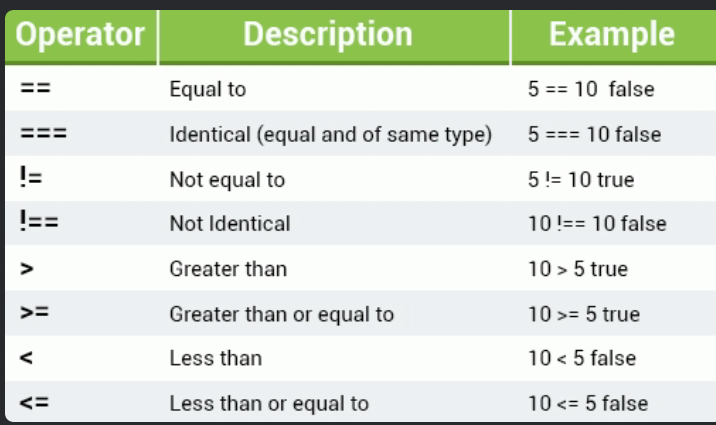

Variables are containers for storing data values. The value of a variable can change throughout the program. Declaring a variable is as simple as using the keyword "var" var x = 10;
In this example we've assigned the value of 10 to the variable x. We've used the word assigned deliberately here, because in JavaScript, the equal sign (=) is actually called the "assignment" operator, rather than an "equal to" operator. This means that in JS, x = y will assign the value of y to x variable.
Imagine your program has 1000 lines of code that include the variable x. With variables you can change the value of the variables and use them multiple times in your code.
Single line comments are denoted by //
Multi-line comments are written between /* */
The term data type refers to the types of values a program can work with. The sky's the limit with JS variables, which can hold a bunch of different data types, such as numbers, strings, and arrays.
Numbers can be written with or without decimals.
We can use strings to store and manipulate text. A string can be any text wrapped in quotes, either single or double, as long as you're consistent with them. You can also use quotes inside the string as long as they don't match the quotes enclosing the string.
You can get double quotes inside of double quotes using the escape character like this: \"text\"
backslash (\) escape character: comes to the rescue when you need to put quotes within strings (and a bunch of other situations) by transforming special characters into string characters.
The escape character (\) isn't just for quotes, it works when you need to put other special characters inside strings too. If you start a string with a single quote, then you need to end it with a single quote, same if used double quote.
| Code | Outputs |
|---|---|
| \' | single quote |
| \" | double quote |
| \\ | backslash |
| \n | new line |
| \r | carriage return |
| \t | tab |
| \b | backspace |
| \f | form feed |
Booleans serve a useful function by leting you have one of two values, either true or false. Used when you need a data type that can only have one of two possible values, like yes/no, on/off, or true/false. The Boolean value of 0 (zero), null, undefined, empty string is false. Everything with a "real" value is true
Arithmetic operators perform arithmetic functions on numbers (both literals and variables)
| Operator | Description | Example |
|---|---|---|
| + | Addition | 25+5=30 |
| - | Subtraction | 25-5=20 |
| * | Multiplication | 10*20=200 |
| / | Division | 20/2=10 |
| % | Modulus | 56%3=2 |
| ++ | Increment | var a=10; a++; now a=11 |
| -- | Decrement | var a=10; a--; now a=9 |
Addition example below
You can add as many numbers or variables together as you want/need to.
You can get the result of a string expression using the eval() function, which takes a string expression argument like eval("10*20+8") and returns the result. if the argument is empty, it returns undefined.
The modulus (%) operator returns the division remainder (what's left over). In JavaScript, we can use the modulus operator on integers and on floating point numbers.
Increment ++: increases the numeric value of its operand by 1. When placed before the operand, it'll return the incremented value. When placed after it, it'll return the original value and then increments the operand.
Decrement --: decreases the numeric value of its operand by 1. When placed before the operand, it'll return the decremented value. When placed after the operand, it'll return the original value and then decrements the operand.
| Operator | Description | Example | Result |
|---|---|---|---|
| var++ | Post Increment | var a = 0, b = 10; var a = b++; | a = 10 and b = 11 |
| ++var | Pre Increment | var a = 0, b = 10; var a = ++b; | a = 11 and b = 11 |
| var-- | Post Decrement | var a = 0, b = 10; var a = b--; | a = 10 and b = 9 |
| --var | Pre Decrement | var a = 0, b = 10; var a = --b; | a = 9 and b = 9 |
Assignment operators are used to assign values to variables. You can use multiple assignment operators in one line, such as x -= y += 9.
| Operator | Example | Is equivalent to |
|---|---|---|
| = | x = y | x = y |
| += | x += y | x = x + y |
| -= | x -= y | x = x - y |
| *= | x *= y | x = x * y |
| /= | x /= y | x = x / y |
| %= | x %= y | x = x % y |
We can use comparison operators in logical statements to find out if variables or values are different. You get either true or false. For example, the equal to (==) operator checks whethere the operands' values are equal. You can compare all types of data with comparison operators, they'll always return true or false.
One important thing to remember when we use operators, is that they only work when they're comaring the same data type; numbers with numbers, strings with strings, etc.
Logical Operators, also known as Boolean Operators, evaluate an expression and return true or false. You can check all types of data; comparison operators always return true or false.
Example: Here we've connected two Boolean expressions with the AND operator. (4 > 2) && (15 > 10) For this expression to be true, both conditions need to be true. -The first condition determines whether 4 is greater than 2, which is true. -The second condition determines whether 15 is greater than 10, which is also true.
Conditional, or Ternary operators assign a value to a variable, based on some condition. This is what the syntax would look like: variable = (condition) ? value1: value2 Example: (see code)
If the variable age is a value below 18, the value of the variable isAdult will be "Too young". Otherwise the value of isAdult will be "Old enough". With logical operators you can connect as many expressions as you want or need to.
Concatenation: we can use concatenation (represented by the + sign) to build strings made up of multiple smaller strings, or by joining strings with other types. Numbers in quotes are treated as strings, so "42" is not the number 42, it's a string that includes the two separate characters, 4 and 2. Example: (see code)
The if statement is a type of conditional statement. We use if to specify a block of code that we want to be executed if a specified condition is true. The statement will only be executed if the specified condition is true. Example: (see code)
If the if statement evaluates to false, the alert statement gets skipped and the program continues with the line after the if statement's closing curly brace.
The else statement is used to specify a block of code that wil execute if the condition is false. Example: (see code)
The else if statement allows us to specify a new condition if the first condition is false. Example: (see code)
The final else statement "ends" the else if statement and should be always written after the if and else if statements. The final else block will be executed when none of the conditions are true. You can write as many else if statements as you need.
The switch statement is used to test for multiple conditions, and can be used instead of if else statements for each condition. The switch statement performs different actions based on different conditions. The switch expression is evaluated once. The value of the expression is compared with the values of each case, and if there's a match, that block of code is executed. You can have as many case statements as you need. Example: (see code)
The break keyword essentially switches the switch statement off. Breaking out of the switch block stops the execution of more code and case testing inside the block. Usually a break should be put in each case statement.
Often there will be no match, but we still need the program to output something. For this we use the default keyword, which specifies the code to run if there's no case match. The default block can be omitted if there is no need to handle the case when no match is found.
Loops can execute a block of code a number of times. They're handy when you want to run the same code repeatedly, adding a different value each time. JavaScript has three types of loops: for, while, and do while.
Here's the syntax for the for loop: for (statement 1; statement 2; statement 3) { code block to be executed }
This is what happens when it runs: Statement 1 is executed before the loop (the code block) starts. Statement 2 defines the condition for running the loop (the code block). Statement 3 is executed each time after the loop (the code block) has been executed.
Example: (see code)
This example creates a for loop that prints the numbers 1 through 5. Statement 1 sets a variable before the loop starts (var i=1). Statement 2 defines the condition for the loop to run (it must be less than or equal to 5). Statement 3 increases a value (i++) each time the code block in the loop has been executed.
Statement 1 is optional, and can be left out if your values are set before the loop starts. Example:
You can also initiate more than one value in statement 1, using commas to separate them. Example:
If statement 2 returns true, the loop will start over again, if it returns false, the loop will end. Statement 2 is also optional, but only if you put a break inside the loop. Otherwise, the loop will never end.
Statement 3 is used to change the initial variable. It can do anything, including negative increment (i--), positive increment (i=i+15). Statement 3 is also optional, but only if you increment your values inside the loop.
The following example writes even numbers from 0 to 20.
The while loop repeats through a block of code, but only as long as a specified condition is true. The condition can be any conditional statement that returns true or false. Example: (see code)
The loop in this code will continue to run as long as i is less than or equal to 10, and each time the loop runs, it will increase by 1. This will output the values from 0 to 10. Be careful when writing conditions. If a condition is always true, the loop will run forever. Endless loops are not good. One way of this happening is we forget to increase the variable used in the condition. Make sure that the condition in a while loop eventually becomes false.
The do...while loop is a variant of the while loop with one important difference. This loop will execute the code block once, before checking if the condition is true, and then it will repeat the loop as long as the condition is true. Example: (see code)
The loop will always be executed at least once, even if the condition is false, because the code block is executed before the condition is tested.
We use the break statement to "jump out" of a loop and continue exeuting the code after that loop.
Example: in this example, once i reaches 5, it will break out of the loop. (see code)
You can use the return keyword to return some value immediately from the loop inside of a function. This will also break the loop.
Unlike the break statement, the continue statement breaks only one iteration in the loop, and continues with the next iteration.
Example: The value 5 is not printed because continue skips that iteration of the loop (see code)
Example 2: (see code)
What is the output of this code?
A JavaScript Function is a block of code designed to perform a particular task. The main advantages of using functions:
To define a JavaScript function, use the function keyword, followed by a name, followed by a set of parentheses(). The code to be executed by the function is placed inside curly brackets {}. Function names can contain letters, digits, underscores, and dollar signs (same rules as variables).
To execute the function, you need to call it. To call a function, start with the name of the function, then follow it with the arguments in parentheses. Always remember to end the statement with a semicolon after calling the function. Example: (see code)
Once the function is defined, JavaScript allows you to call it as many times as you want to. You can also call a function using this syntax: myFunction.call(). The difference is that when calling this way, you're passing the 'this' keyword to a function.
Functions can take parameters. Function parameters are the names listed in the function's definition. As with variables, parameters should be given names, which are separated by commas within the parentheses.
Syntax: functionName(param1, param2, param3) { //some code }
After defining the parameters, you can use them inside the function. Example: (see code)
Thus function takes in one parameter, which is called name. When calling the function, provide the parameter's value (argument) inside the parentheses. Function arguments are the real values passed to (and received by) the function.
You can define a single function, and pass different parameter values (arguments) to it. This will execute the function's code each time for the provided argument.
You can define multiple parameters for a function by comma-separating them.
Sequence:
function myFunc(x, y) { //some code }
The example above defines the function myFunc to take two parameters.
The parameters are used within the function's definition. Function parameters are the names listed in the function definition. Example: (see code)
When calling a function, provide the arguments in the same order in which you defined them. If you pass more arguments than are defined, they will be assigned to an array called arguments. They can be used like this: arguments[0], arguments[1], etc.
After defining the function, you can call it as many times as needed. JavaScript functions do not check the number of arguments received. If a function is called with missing arguments (fewer than declared), the missing values are set to undefined, which indicates that a variable has not been assigned a value.
A function can have an optional return statement. It is used to return a value from the whole function. This statement is useful when making calculations at require a result. When JavaScript reaches a return statement, the function stops executing.
Use the return statement to return a value. For example, let's calculate the product of two numbers, and return the result. (see code)
If you do not return anything from a function, it will return undefined.
Example 2: (see code)
JavaScript offers three types of popup boxes, the Alert, Prompt, and Confirm boxes.
An alert box is used when you want to ensure that information gets through to the user. When an alert box pops up, the user must click OK to proceed. The alert function takes a single parameter, which is the text displayed in the popup box.
Example: (see code)
To display line breaks within a popup box, use a backslash followed by the character n. Example: (see code)
A prompt box is often used to have the user input a value before entering a page. When a prompt box pops up, the user will have to click either OK or Cancel to proceed after entering the input value. If the user clicks OK, the box returns the input value. If the user clicks Cancel, the box returns null.
The prompt() method takes two parameters. The first is the label, which you want to display in the text box. The second is a default string to display in the text box (optional). Example: (see code)
Do not overuse this method, because it prevents the user from accessing other parts of the page until the box is closed.
A confirm box is often used to have the user verify or accept something. When a confirm box pops up, the user must click either OK or Cancel to proceed. If the user clicks OK, the box returns true. If the user clicks Cancel, the box returns false.
JavaScript variables are containers for data values. Objects are variables too, but they can contain many values. Think of an object as a list of values that are written as name:value pairs, with the names and the values separated by colons.
Example: (see code)
These values are called properties
| Property | Property Value |
|---|---|
| name | John |
| age | 31 |
| favColor | green |
| height | 183 |
JavaScript objects are containers for named values.
You can access object properties in two ways.
objectName.propertyName or objectName['propertyName']
This example demonstrates how to access the age of our person object. (see code)
JavaScript's built-in length property is used to count the number of characters in a property or string.
Objects are one of the core concepts in JavaScript.
An object method is a property that contains a function definition.
Use the following syntax to access an object method.
objectName.methodName()
document.write() outputs data. The Write() function is actually a method of the document object.
Methods are functions that are stored as object properties.
Access the "color" property of the "hair" object using dot syntax: hair.color